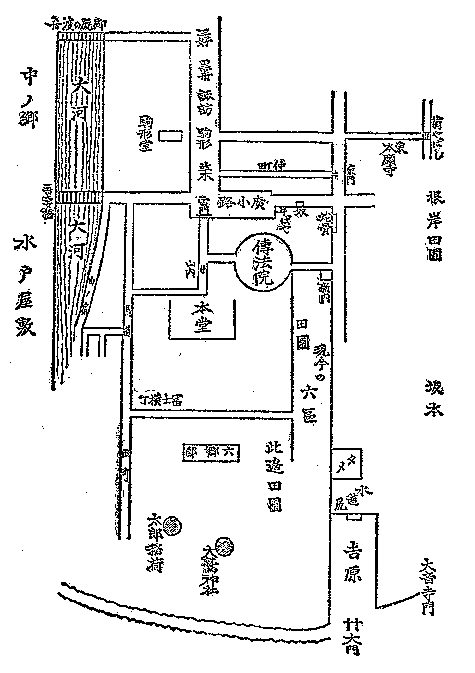

| 幕末維新懐古談 12 名高かった店などの印象 | |
| 高村 光雲 | |
| (2012) | |
幕末維新懐古談
名高かった店などの印象
高村光雲
雷門に接近した並木には、門に向って左側に「山屋」という有名な酒屋があった（麦酒
、保命酒
のような諸国の銘酒なども売っていた）。その隣りが遠山という薬種屋
、その手前（南方へ）に二八そば（二八、十六文で普通のそば屋）ですが、名代の十一屋
というのがある。それから駒形に接近した境界
にこれも有名だった伊阪
という金物屋
がある（これは刃物が専門で、何時
でも職人が多く買い物に来ていた）。右側は奴
の天麩羅
といって天麩羅茶漬
をたべさせて大いに繁昌をした店があり、直ぐ隣りに「三太郎ぶし」といった店があった。これはお歯黒をつけるには必ず必要の五倍子
の粉を売っていた店で、店の中央に石臼
を据
えて五倍子粉を磨
っている陰陽の生人形が置いてあって人目を惹
いたもの、これは近年まで確かあったと覚えている。その手前に「清瀬
」という料理屋があってなかなか繁昌しました。その横町が、ちっと不穏当なれど犬の糞横町
......これも江戸名物の一つとも申すか......。
清瀬から手前に絵馬屋
があった。浅草の生
え抜きで有名な店でありました。何か地面訴訟
があって、双方お上へバンショウ（訴訟の意）した際、絵馬屋は旧家のこと故、古証文を取り出し、これは梶原
の絵馬の註文書でござりますと差し出した処、お上の思
し召しで地所を下されたとかで、此店
が拝領地であったとかいうことでありました（並木と吾妻橋との間に狭い通りがあって、並木の裏通りになっている。これは材木町といって材木屋がある）。それから、並木から駒形へ来ると、名代の酒屋で内田というのがあった。土蔵が六戸前
もあった。横町が内田横丁
で、上野方面へ行くと本願寺の正門前へ出て菊屋橋通りとなる見当――
内田から手前に百助
（小間物
店があった。職工用の絵具一切を売っているので、諸職人はこの店へ買いに行ったもの）、この横丁が百助横丁、別に唐辛子
横丁ともいう。その手前の横丁の角が鰌屋
（これは今もある）。鰌屋横丁を真直に行けば森下
へ出る。右へ移ると薪炭
問屋の丁子屋
、その背面
が材木町の出はずれになっていて、この通りに前川
という鰻屋がある。これも今日繁昌している。これから駒形堂です。
堂は六角堂で、本尊は観世音
、浅草寺の元地であって、元の観音の本尊が祭られてあった所です。縁起
をいうと、その昔、隅田川
をまだ宮戸川といった頃、土師臣中知
といえる人、家来の檜熊
の浜成
竹成
という両人の者を従え、この大河に網打ちに出掛けたところ、その網に一寸八分黄金無垢
の観世音の御像
が掛かって上がって来た。主従は有難きことに思い、御像をその駒形堂の所へ安置し奉ると、十人の草刈りの小童
が、藜
の葉をもって花見堂のような仮りのお堂をしつらえ、その御像を飾りました。遠近
の人々は語り伝えて参詣
をした。それで駒形堂をまた藜堂とも称
えます。そうして主従三人は三社権現
と祭られ浅草一円の氏神
となり、十人の草刈りは堂の左手の後に十子堂をしつらえて祭られました。
駒形は江戸の名所の中でも有名であることは誰も知るところ......何代目かの遊女高尾
の句で例の「君は今駒形あたりほとゝぎす」というのがありますが、なるほど、駒形は時鳥
に縁
のあるところであるなと思ったことがあります。というのは、その頃おい、駒形はまことによく時鳥の鳴いた所です。時鳥の通り道であったかのように思われました。それは、ちょうどこの駒形堂から大河を距てて本所
側に多田の薬師
というのがありましたが、この叢林
がこんもり深く、昼も暗いほど、時鳥など沢山巣をかけていたもので、五月
の空の雨上がりの夜などには、その藪
から時鳥が駒形の方へ飛んで来て上野の森の方へ雲をば横過
って啼
いて行ったもの......句の解釈は別段だけれども、実地には時鳥のよく鳴いた所です。そして向う河岸一帯は百本杭
の方から掛けて、ずっとこう薄気味
の悪いような所で、物の本や、講釈などの舞台に能
くありそうな淋しい所であった。
さて、駒形堂から後
へ退
って、「川升
」という料理屋が大層流行
り、観音の市の折りなど、それは大した繁昌。客が立て込んで酔興な客が、座敷に出てる獅嚙火鉢
を担
ぎ出して持って行ったのさえも気が附かなかったという一ツ話が残っている位、その頃はよく有名なお茶屋などの猪口
とか銚子袴
などを袂
になど忍ばせて行ったもの、これは一つの酒興で罪のないわるさ
であった。
諏訪町では向って左が諏訪神社、師匠東雲の店は社の筋向うの右側にあったのです。町の中ほどには紅勘
（小間物屋）があってこれも有名でした。紅勘で思い出すが、その頃、鉦
と三味線
で長唄
を歌って流して歩いた紅勘というものがあって評判でありました。これが小間物屋の紅勘と何か関係あるように噂
されたが、実際は全く何んの因縁もなかったものといいます。菊五郎
であったか、芝翫
であったか、この紅勘のことを芝居にしたことがありました（長唄の紅勘とは別の男ですが、五代目菊五郎がまだ羽左衛門
で売り出しの時、鎌倉節仙太郎
という者が、江戸市中を鉦三味線で、好い声で飴
を売りながら流して歩いて評判でした。羽左衛門がそれをやって大当りのことがありました）。
小間物屋の紅勘と近接した横丁には「みめより
」という汁粉
屋がある。それから「金麩羅
」という天麩羅屋がある。いずれも繁昌、右側は乾
（煙草屋）、隣りが和泉屋
（扇屋）、この裏へ這入
ると八百栄
（料理屋）それから諏訪町河岸へ抜けると此所は意気な土地で、一中
、長唄などの師匠や、落語家では談枝
などもいて、異
な人たちが住まっていた。河岸つづきで、河岸には「坊主蕎麦
」というのがあって、これは一流でした。主人は坊主で、聾
のため「聾そば」で通っていた。その隣りが浅利屋という船宿
、此所を浅利屋河岸といった。表通りの金麩羅屋の向うに毛抜き屋があった。この店の毛抜きは上手といわれたもの、いろいろ七ツ道具が揃っていて、しゃれた人たちが買いに来た。それから、錫屋
というのがあった。この店は江戸市中にも極
少ない店で、錫の御酒徳利、お茶のつぼ、銚子などを売っていた。
黒船町
へ来ると、町が少し下って二の町となる。村田の本家（烟管屋
）がある。また、榧寺
という寺がある。境内に茅
が植わっていた。それから三好町
、此所には戯作
などをした玄魚
という人のビラ屋があった。
こう話して行くと、記憶は記憶を生んで、何処まで行くか分りませんから、雷門へひとまず帰って、門へ向って左側、広小路へ出ましょう。
此所にはまた菜飯
茶屋という田楽
茶屋がありました。小綺麗
な姉
さんなどが店先ででんがくを喰
ってお愛想をいったりしたもの、万年屋、山代屋
など五、六軒もあった。右側に古本屋の浅倉、これは今もある。それから奴
（鰻屋）。地形が狭
まって田原町になる右の角に蕎麦屋があって、息子
が大纏
といった相撲
取りで、小結か関脇位まで取り、土地ッ児で人気がありました。この向うに名代の紅梅焼きがありました。
観音堂に向っては右が三社権現、それから矢大臣門（随身門
のこと）、その右手の隅に講釈師が一軒あった。
門を出ると直ぐ左に「大みつ」といった名代な酒屋があった。チロリで燗
をして湯豆腐などで飲ませた。剣菱
、七ツ梅
などという酒があった。馬道へ出ると一流の料理屋富士屋があり、もっと先へ出ると田町
となって、此所は朝帰りの客を招
ぶ蛤鍋
の店が並んでいる。馬道から芝居町
へ抜けるところへ、藪の麦とろ
があり、その先の細い横丁が楽屋新道
で、次の横丁が芝居町となる。猿若町は三丁目まであって賑
わいました。
山
の宿
を出ると山谷堀......越えると浅草町で江戸一番の八百善
がある。その先は重箱
、鯰
のスッポン煮が名代で、その頃、赤い土鍋をコグ縄で結わえてぶら下げて行くと、
「重箱の帰りか、しゃれているぜ」などいったもの。
花川戸から、ずっと、もう一つ河岸の横町が聖天町
、それを抜けると待乳山
です。
「待乳沈んで、梢
乗り込む今戸橋」などいったもの、河岸へ出ると向うに竹屋の渡し船があって、隅田川の流れを隔て墨堤
の桜が見える。山谷堀を渡ると、今戸で焼き物の小屋が煙を揚げている。戸沢弁次という陶工が有名であった。
山谷堀には有明楼
、大吉
、川口、花屋などという意気筋な茶屋が多く、この辺一帯江戸末期の特殊な空気が漂っていました。
また元の道へ引き返して、雷門の前通りを花川戸へ曲がる角
に「地蔵の燈籠
」といって有名な燈籠があった。古代なものであったが、年号が刻
ってないので何時頃
のものとも明瞭
とは分らぬ。小野の小町の石塔だというかと思えば、弘法大師の作であるとか、いずれも当てにはならぬ。中央に地蔵尊を彫り、傍
に一人の僧が敬礼をしており、下の方に、花瓶
に蓮
を挿
してある模様が彫りつけてある。これは西仏といえる人、妻と、男女二子の供養のために建立
したものということだけは書きつけてあった。大火の際焼けましたが、破片は今も残っていて、花川戸の何処かの小祠
にでも納めてあるでありましょう。
観音の地内は、仁王門から右へ弁天山へ曲がる角に久米
の平内
の厳
めしい石像がある（今日でもこれは人の知るところ）。久米は平内妻の姓であるとか。元は兵藤平内兵衛
といった人、青山主膳
の家臣、豪勇無双と称せられた勇士です。石平道人正三
（鈴木九太夫）の門人であった。俗説にこの人、武芸の達人で、首斬りの役をして、多くの人命を絶ったにより、その罪業消滅のため、自分の像を石に刻ませ、往来へ抛
り出し、恨みある人は我を蹴
って恨みを晴らせとの希望で、こうして石像を曝
したものであるという......されば、その足で「踏み附ける」という言葉をもじり（文
附
ける）という意にして、縁結びの心願の偶像となったものとか、今でも祠
の格子
に多くの文が附けられてある。
雷門から仁王門までの、今日の仲店
の通りは、その頃は極
粗末な床店
でした。屋根が揚げ卸しの出来るようになっており、縁と、脚がくるり
になって揚げ縁になっていたもので、平日は、六ツ（午後六時）を打つと、観音堂を閉扉
するから商人は店を畳んで帰ってしまう。後
はひっそりと淋しい位のものでした。両側は玩具屋
が七分通り（浅草人形といって、土でひねって彩色したもの、これは名物であった）、絵草紙、小間物
、はじけ豆、紅梅焼、雷おこし（これは雷門下にあった）など、仁王門下には五家宝
という菓子、雷門前の大道には「飛んだりはねたり」のおもちゃを売っていた。蛇
の目
の傘
がはねて、助六
が出るなど、江戸気分なもの、その頃のおもちゃにはなかなか暢気
なところがありました。
雷門は有名ほど立派なものではなく、平屋の切妻
作りで、片方が六本、片方が六本の柱があり、中心の柱が屋根を支
え、前には金剛矢来
があり、台坐の岩に雲があって、向って右に雷神、左に風の神が立っていました。魚がしとかしんばとか書いた紅
い大きな提灯
が下がって何んとなく一種の情趣があった。
仁王門は楼門です。楼上には釈迦に十六羅漢があるはず。楼下の左右には金剛力士の像が立っている。
仲店の中間、左側が伝法院で、これは浅草寺の本坊である。庭がなかなか立派で、この構えを出ると、直ぐ裏は、もう田圃で、左側は田原町の後ろになっており、蛇骨湯
という湯屋があった。井戸を掘った時大蛇の頭が出たとやらでこの名を附けたとか。有名な湯屋です。後ろの方はその頃新畑町
といった所、それからまた田圃であった。
伝法院の庭を抜け、田圃の間の畔道
を真直に行くと（右側の田圃が今の六区一帯に当る）、伝法院の西門に出る。その出口に江戸俠客
の随一といわれた新門辰五郎
がいました。右に折れた道が弘隆寺、清正公
のある寺の通りです。それから一帯吉原田圃で、この方に太郎稲荷（この社は筑後
柳川
立花
家の下屋敷内にある）の藪が見え、西は入谷田圃に続いて大鷲
神社が見え、大音寺前
の方へ、吉原堤に聯絡
する。この辺が例のおはぐろどぶ
のあるところ......すべて、ばくばくたる水田で人家といってはありませんでした。
ざっと略図のようなものでいうと、こんな風な地形となる。

底本：「幕末維新懐古談」岩波文庫、岩波書店
１９９５（平成7
）年1
月17
日第1
刷発行
底本の親本：「光雲懐古談」万里閣書房
１９２９（昭和4
）年1
月刊
入力：網迫、土屋隆
校正：しだひろし
２００６年2
月14
日作成
２００６年6
月21
日修正
青空文庫作成ファイル：
このファイルは、インターネットの図書館、青空文庫（http://www.aozora.gr.jp/）で作られました。入力、校正、制作にあたったのは、ボランティアの皆さんです。